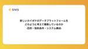

エス・エム・エス エンジニア テックブログ
https://tech.bm-sms.co.jp/
エス・エム・エスの開発組織、技術的取り組み、採用情報などを発信します
フィード

QA組織に不具合分析の仕組みを導入したお話 1
1
エス・エム・エス エンジニア テックブログ
はじめに 介護事業者向け経営支援サービス「カイポケ」でQAを担当している中村です。今回の記事は少し前の取り組みなのですが、私が導入を推進した『不具合分析』について紹介したいと思います。真新しい取り組みではないのですが、本記事を通じてエス・エム・エスのQA組織のことを少しでも知ってもらえれば幸いです。 不具合分析の導入 導入の経緯 私が入社した当初、不具合分析の導入をQA組織として目指していたのですが、日々の業務に忙殺されてそこまで手が掛けられていない状況でした。前職時代に不具合分析の経験があったのと導入へのモチベーションが高かったので、志を同じくする有志のメンバーを募って導入活動を推進していく…
2日前

新しいカイポケのデータプラットフォームをどのように考えて構築しているのか：目的・制約条件・システム構成
エス・エム・エス エンジニア テックブログ
カイポケ・データプラットフォームチームの河本と申します。以前にSMS Tech blog では 「なぜ介護事業者向け経営支援 SaaS「カイポケ」でデータプラットフォームをこれから作るのか」 では介護を取り巻く社会環境の観点からデータプラットフォームに求められる要件について、「「マーケットに向き合う」エンジニアと経営陣がいたからこそ爆誕したデータプラットフォームチーム」ではデータプラットフォームチームのこれまでの進捗について、社内でのミッション設定やチーム組成について語ってきました。 tech.bm-sms.co.jp tech.bm-sms.co.jp この記事では、これらの記事に続いて、デ…
14日前

株式会社エス・エム・エスはRubyKaigi 2024に参加したい学生さんを支援します！
エス・エム・エス エンジニア テックブログ
（2024年3月21日追記：以下の募集は締め切りました。ご応募ありがとうございました！） はじめに エス・エム・エスでエンジニアリングマネージャーをしている @emfurupon777 です。 5月15日〜17日にRubyKaigi 2024が開催されます(会場： 沖縄県那覇市 那覇文化芸術劇場なはーと)。 弊社はPlatinumスポンサーとして協賛し、ブース出展もさせていただきます。 rubykaigi.org 当日は弊社技術責任者の @sunaot や登壇を予定している @coe401_ をはじめとする弊社社員たちが参加予定です。 今回、弊社としてははじめての試みとして、学生さんのRuby…
16日前
会社として初めてのアドベントカレンダーのふりかえり
エス・エム・エス エンジニア テックブログ
エス・エム・エスで開発者をしている @koma_koma_d です。 昨年末、弊社としては初めて、アドベントカレンダー企画を実施しました！ qiita.com tech.bm-sms.co.jp 今回の記事は、アドベントカレンダーの実施の「ブログ運営チーム視点での」ふりかえりです。 なぜアドベントカレンダーを実施したのか 直接のきっかけは「やってみたい」という声をブログ運営チームとは関係のないところで酒井さん @_atsushisakai が「やりませんか？」と提案してくれたことです。以前ブログでも紹介した「社内版potatotips」には元々知見の共有に積極的なメンバーが集まっていて、その参…
23日前
「報酬計算をモデリングして自然なコードに落とし込む」介護ドメインの複雑さと向き合ってきた６年間の話
エス・エム・エス エンジニア テックブログ
介護事業者向け経営支援サービス「カイポケ」の開発をしているエンジニアの宗です。２０１８年に入社し、早いものでこの春には７年目に入ります。（自分としてはまだ４年経ったくらいの気分なので、数えてみては毎回驚いてます） 今回は、エス・エム・エスに中途で入社して以降、自分がどんなことをやってきたかを振り返りつつ、一部を具体的にご紹介してみようと思います。今と状況が変わっているところもありますが、エス・エム・エスでの仕事ってどのような雰囲気だろうと気になっている方の参考になれば嬉しいです。 これまでやってきたこと 私は入社当初から、カイポケのレセプト機能周辺をメインとして担当してきました。最初の数年は現…
1ヶ月前
エンジニアリングマネージャーがシステム障害対応訓練をやる前に、何を考えどう準備したのか
エス・エム・エス エンジニア テックブログ
こんにちは。介護事業者向け経営支援サービス『カイポケ』でエンジニアリングマネージャー（以下EM）を担当している橋口( @gusagi )です。 今回の記事は、以前に公開した記事『システム障害対応訓練をゲームライクにやってみた』で紹介した訓練を行うまでにどんなことを考え、どんな準備をしていたのかを紹介したいと思います。 tech.bm-sms.co.jp 今回の記事は、訓練の舞台裏を紹介するものとなります。どんなことをやったのかを知ってからの方がイメージしやすくなる部分もあるかと思いますので、まだ読んでいない方がいましたら先に読んでもらえると嬉しいです。 誰と、どんな風に始めたのか まずは、シス…
1ヶ月前
介護業界におけるサイクルをシステム思考で表現してみた
エス・エム・エス エンジニア テックブログ
はじめに 介護事業者向け経営支援サービス「カイポケ」のプロダクトマネージャーを担当している 田村 恵 です。 この記事では、介護業界における複雑な業務サイクルをシステム思考（Systems thinking; Wikipedia）を用いて新たな角度から捉えた試みについて紹介します。介護業界は、たくさんのステークホルダーと業務が複雑に絡みあうことにより、SaaSを提供するためのドメイン理解が非常にチャレンジングです。私たちは、ケアマネジャーの業務サイクルを視覚的に表現することで、業界(マーケット)の理解と業務に関するドメイン理解を深めることを目指しました。この記事では、その過程と成果について詳し…
1ヶ月前
年間約400件のカジュアル面談を実施していたんだけどもっとしたい！
エス・エム・エス エンジニア テックブログ
こんにちは、プロダクト開発部人事のふかしろ(@fkc_hr)です。 年の変わり目ということで目の前の数字だけではなく、通年単位での実績の振り返りなどをしていたところ、なんとプロダクト開発部の採用活動の中で、2023年で約400件のカジュアル面談を実施していたことがわかりました！ありがとうございました。 カジュアル面談のFAQページを作りました カジュアル面談の時間をより充実したものにするために、改めてこんなコンテンツを作成しました。 careers.bm-sms.co.jp 上記コンテンツでは、カジュアル面談でよくご質問いただくことへの回答や、補足になるような過去の記事をご紹介しています。 カ…
2ヶ月前
医療キャリア事業に向き合う開発組織の変化
エス・エム・エス エンジニア テックブログ
こんにちは、プロダクト開発部人事のふかしろ(@fkc_hr)です。 エス・エム・エスは複数の事業を展開しており、プロダクト開発部もそれぞれのチームが事業ごとに開発を進めているのが特徴です。今回、キャリア分野の取り組みについてまとめた事業・プロダクト紹介のピッチ資料を作成いたしました。本記事では一部抜粋する形で内容の紹介と今後の記事の告知をさせてください！ 医療キャリア事業とは？ エス・エム・エスのキャリア事業領域では、高齢社会が直面する「質の高い医療・介護サービスの提供が困難になる」という社会課題に対し、「医療・介護の人手不足と偏在の解消」に貢献することで解決を目指しています。 医療キャリア事…
2ヶ月前
【資料公開】pmconf2023「”リビルド”プロダクトマネジメントの極意」
エス・エム・エス エンジニア テックブログ
プロダクトマネージャーカンファレンス2023で登壇しました 介護職向け求人情報サービス「カイゴジョブ」のプロダクトマネージャーを務めている田中（@tatsunori_ta）です。 株式会社エス・エム・エス Advent Calendar 2023の8日目の記事でもお伝えしておりますが、会社を代表してプロダクトマネージャーカンファレンス2023（pmconf2023）にて登壇する機会をいただきました。 note.com pmconf2023では「”リビルド”プロダクトマネジメントの極意」のタイトルで発表しております。 発表要旨は以下です。 ある程度の規模、組織では既にあるプロダクトのPMになる方…
2ヶ月前
カイポケが5,000法人に利用されているプロダクトをクローズした話
エス・エム・エス エンジニア テックブログ
エス・エム・エスが提供する介護事業者向け経営支援サービス「カイポケ」では、サービス停止も含めたプロダクトの「見直し」を継続的に実施しています。たとえば、2023年2月には、カイポケ内にて5,000法人が利用していた勤怠管理・給与計算機能をクローズし、株式会社マネーフォワードとの業務提携によって実現した「カイポケ会計・労務 by Money Forward」への一本化を進めました。カイポケリニューアルプロジェクトが進む中で、介護業界の複雑性と課題の大きさを改めて認識するとともに、限りあるリソースの中でカイポケが本当にユーザーに届けたい価値は何かと問い続けた結果、その他にも、2022年度には7件の…
2ヶ月前
プロダクトオーナーの魅力とは？元セールス出身者が社内転職してみて思う事
エス・エム・エス エンジニア テックブログ
はじめに 介護事業者向け経営支援サービス「カイポケ」のプロダクトオーナーをしている 岩下 真志穂 と申します。 入社して約４年間ビジネスサイドでセールス業務をしていたのですが、2023年中頃に入ってプロダクト開発の知識がほぼゼロに近い状態で異動をして、プロダクトオーナー(PO)をすることになりました。 どんな方に読んでほしいか そんな私がこの約半年間でどういう課題に直面し、それをどう解決してきたのかを本エントリーで共有したいと思います。この記事は ビジネスサイドや事業部での経験はあるが、全くの異職種へ未経験で転向した人の異動エントリが読みたい！ Vertical SaaSを提供しているエス・エ…
3ヶ月前
「社会に貢献し続ける」会社で働いています
エス・エム・エス エンジニア テックブログ
はじめに この記事は 株式会社エス・エム・エス Advent Calendar 2023 の 20 日目の記事です。 はじめまして、キャリア事業部でマネージャーをしている @kenjiszk です。2023年4月に入社し、はや9ヶ月目になりました。私は、エス・エム・エスのミッションである「高齢社会に適した情報インフラを構築することで人々の生活の質を向上し、社会に貢献し続ける」がとても気に入っているのですが、特にお気に入りポイントである「社会に貢献し続ける」という部分について私の経験をもとに紹介できればと思っています。 ひとこと「社会に貢献し続ける」といっても解像度が荒いので、そのためにはどうい…
3ヶ月前
dd-java-agent によって GraphQL クエリの情報が自動収集される仕組み
エス・エム・エス エンジニア テックブログ
この記事は株式会社エス・エム・エス Advent Calendar 2023の14日目の記事です。 qiita.com カイポケリニューアルプロジェクトのバックエンドチームに所属している丸井です。 私のチームでは Spring for GraphQL を使ってバックエンドサービスを開発しています。監視基盤としては Datadogを利用していますが、トレースやGraphQL クエリ関連の各種メトリクスは java プロセス起動時に javaagent として dd-java-agentを指定することで収集がされています。 dd-java-agent を使うことでアプリケーションコードに何も手を入…
3ヶ月前
QA組織が推進しているMagicPodを使ったE2Eテスト自動化の現状を整理してみた
エス・エム・エス エンジニア テックブログ
この記事は株式会社エス・エム・エス Advent Calendar 2023の13日目の記事です。 qiita.com はじめに 介護事業者向け経営支援サービス「カイポケ」のQAを担当している中村です。2021年10月に入社して早2年、現在ではQA組織の運営や横断的に複数QAチームに関わりつつ、チームのサポートや改善活動の推進など様々なことを担当させてもらっています。 今回の記事では改善活動で実施した施策の一つである、『E2Eテスト自動化の導入』をテーマにどんなテストを自動化しているか？どんな運用をしているか？など、現状を整理する形でお話ししていきたいと思います。ここでお話しするのはあくまでQ…
3ヶ月前
データサイエンティストがエンジニアチームに社内留学してみた話
エス・エム・エス エンジニア テックブログ
この記事は「株式会社エス・エム・エス Advent Calendar 2023」の12日目の記事です。 こんにちは、Analytics&Innovation推進部（以下、A&I推進部）の小貝（@oddgai）です。 M-1グランプリの決勝が近づいてきて、今年ももう終わりか〜としみじみしています。 今年は夫婦で真空ジェシカ、令和ロマン、ヤーレンズ、敗者復活でななまがりを応援しています。がんばれ！ さて、社内のデータ活用チームであるA&I推進部にデータサイエンティストとして新卒入社して4年目になるのですが、今年の4月から「カイポケ」のフルリニューアルプロジェクトのエンジニアチームに社内留学してアプ…
4ヶ月前
エス・エム・エスが Designship 2023 に協賛しました！
エス・エム・エス エンジニア テックブログ
はじめに こんにちは。エス・エム・エスのプロダクトデザイングループ マネージャーの酒井 (@_atsushisakai) です。 エス・エム・エスは、9月30日〜10月1日 に行われた Designship 2023 にゴールドスポンサーとして協賛をさせていただきました。この記事では、 Designship 2023 におけるエス・エム・エスとしての活動の振り返りと、メンバーによる参加レポートとなっております。 はじめてのデザインカンファレンス協賛 エス・エム・エスのデザイン組織としてはこのような大型カンファレンスへの協賛を行うのは初めてでした。今回は協賛にあたって、会場で流してもらえるCM動…
4ヶ月前
システム障害対応に指揮官(インシデントコマンダー)として関わる際にやっている事 11 個
エス・エム・エス エンジニア テックブログ
この記事は 株式会社エス・エム・エス Advent Calendar 2023 の11日目の記事です。 無いに越した事はありませんが、サービスを長い間運用しているとどうしてもシステム障害対応をやらなければいけないタイミングがあります。この記事では、小規模なアラート対応から数日間に渡るチーム横断での大規模障害までいくつのシステム障害対応に関わる中で実際に私が行ってきた事を 11 個紹介してみようと思います。 前置きとして、現在私が所属するチームはほぼ100%フルリモートで開発を行っており、それを前提とした内容になっています。 1. 専用のコミュニケーションスペースを作る 2. 役割分担をする 3…
4ヶ月前
フロントエンドチームで今年やったこと100
エス・エム・エス エンジニア テックブログ
はじめに この記事は 株式会社エス・エム・エス Advent Calendar 2023 の 10 日目の記事です。 カイポケリニューアルプロジェクトでエンジニアリングマネージャーをしている @hotpepsi です。 フロントエンドのチームが本格的に立ち上がってから一年ほど経過しました。現在では二つのフロントエンドチームが日々活発に開発しており、多くの時間は、アプリケーションコードを書いたり、より良い仕様を議論したりすることに費やしています。並行して、コンポーネント共通で発生する問題を解消したり、開発者体験や生産性を向上させる取り組みも数多く行ってきました。 今回は一年分のまとめとして、アプ…
4ヶ月前
EMとして両利きの経営を考える
エス・エム・エス エンジニア テックブログ
この記事は株式会社エス・エム・エス Advent Calendar 2023の9日目の記事です。 qiita.com はじめに 株式会社エス・エム・エスでエンジニアリングマネージャーをしている@emfurupon777です。今回は両利きの経営という考え方をエンジニア組織に適用していくにはー？を考えてみる。ということで、概要の紹介と弊社の今年の取り組みをあてはめてみようと思います。 ※記載内容に誤りなどがある場合は筆者のX(旧Twitter)宛に連絡をいただけると幸いです。 参照書籍 エンジニアにとっては馴染みが薄い書籍かもしれないのですが、こちらです。 str.toyokeizai.net 原…
4ヶ月前
「プロダクトコード探索&改修」入門
エス・エム・エス エンジニア テックブログ
この記事は、「株式会社エス・エム・エス Advent Calendar 2023」7日目の記事です。 qiita.com Webサービスが長期間運営されると、成長に伴い複雑なプロダクトコードが蓄積されます。このような長寿サービスは多くの人が関わってきたということでもあり、様々な思いや依頼のもとにプロダクトコードが少しずつ変わってきています。そんな長いサービスに対して手を加えるとき、関わってきたすべての人たちがコミュニケーションできる範囲内にいるとは限りません。そのため、いまあるプロダクトコードから当時の意図を汲み取り、手を加えるという場面は多く存在すると思います。 これらの場面に直面する話は多…
4ヶ月前
キャリア事業のデータエンジニアが運用する、データ分析基盤における「データカタログ」について
エス・エム・エス エンジニア テックブログ
この記事は株式会社エス・エム・エス Advent Calendar 2023の6日目の記事です。 エス・エム・エス BPR推進部 カスタマーデータチームの橘と申します。 私は「ナース人材バンク」等のキャリア事業を中心に、社内のデータ活用の推進、データ基盤の開発運用を担当する、データエンジニアの役割を担っています。 今回は私の組織におけるデータエンジニアの役割を簡単にご紹介し、データ活用の推進のために進めている活動の1例として、データカタログの整備についてご紹介します！ データエンジニアとは そもそもデータエンジニアとはどういう役割でしょうか？ 一言でいうと、社内のデータ活用に携わるITエンジニ…
4ヶ月前
システム障害対応訓練をゲームライクにやってみた
エス・エム・エス エンジニア テックブログ
こんにちは。介護事業者向け経営支援サービス「カイポケ」でエンジニアリングマネージャーを担当している橋口(@gusagi)です。 今回は、少し前にカイポケの訪問看護チームで行った「システム障害対応訓練」について紹介します。 なお、システム障害対応訓練に関しては、今回の記事だけでなく裏側を中心に紹介する記事を掲載予定です。 今回の記事ではやったことを中心に紹介させてもらい、別の記事では準備期間・当日・ふりかえりの裏側でどんな動き・工夫があったのかを紹介する予定です。そちらもなるべく早く公開するつもりですので、ご期待いただけますと幸いです。 きっかけ 訪問看護チームでは、テックリードを中心とした体制…
4ヶ月前
「プロダクトとしてのドキュメント」を目指してドキュメンテーションへの考え方をアンラーンする
エス・エム・エス エンジニア テックブログ
この記事は、「株式会社エス・エム・エス Advent Calendar 2023」3日目の記事です。 qiita.com 介護事業者向け経営支援サービス「カイポケ」の開発をしている @koma_koma_d です。 私が所属しているチームは、介護事業所の業務のなかの一部の領域を扱う箇所の開発を担当しています。最近、このチームの置かれている状況に変化があり、それに伴って（他にも様々な変化が必要になっているのですが）ドキュメンテーションについての方針転換がありました。この方針転換は、私個人にとってもこれまでの働き方を一部改めるきっかけになるものでしたので、今回の記事では、その方針転換について紹介し…
4ヶ月前
「株式会社エス・エム・エス Advent Calendar 2023」が始まります！
エス・エム・エス エンジニア テックブログ
株式会社エス・エム・エス Advent Calendar 2023 エス・エム・エスで開発者をしている @koma_koma_d です。 今年もアドベントカレンダーの季節ですね、ということで、今年はエス・エム・エスでもアドベントカレンダーをやります！ qiita.com 記事は、このブログ以外に、各メンバーの個人ブログ、Qiita、Zennなどの様々な媒体に投稿される予定です。公開された記事はXのアカウント @BM_SMS_tech で随時シェア予定ですので、ぜひアカウントをフォローしていただけると幸いです！ 誰が何を書くのか 参加するメンバーは、 開発者 SRE エンジニアリングマネージャー…
4ヶ月前
その新規登録、適切な設計になっていますか？
エス・エム・エス エンジニア テックブログ
はじめに エス・エム・エスのヘルスケア事業部所属のエンジニアの今村と申します。この会社に転職してきて気がつけば10年以上となります。 その間に、新規登録の処理を何度も何度も設計してきました。設計とは言うものの、入力用の画面を用意しPOSTしたらその値をサーバーサイドで検証してDBに登録するという大枠の流れは同じです。しかし最近になって、それで本当に良いのか？ と再考する機会がありました。 今回は、その時に再考した内容を整理したいと思います。 再考することになった経緯 仕事では、webサービスの改善・運用の他、業務で使うkintoneのカスタマイズも担当しています。 ある日、kintoneアプリ…
4ヶ月前
なぜ学習することへ投資するのか
エス・エム・エス エンジニア テックブログ
技術責任者の@sunaotです。エス・エム・エスのプロダクト組織では、カンファレンス参加や専門書籍による学習などを強く推奨して、金銭的・時間的な支援も広く行なっています。 取組み自体はとくに最近の Web の会社では珍しいものではありません。ただ、位置付けや考え方を表明しているのはやや珍しいらしく、入社してきた人やカジュアル面談の場などで説明すると面白がってもらえることがあります。そこで、今回はその背景や考え方を説明してみます。便宜上ソフトウェアエンジニアを例に説明をしますが、基本的にはプロダクトマネージャーやデザイナーなど他の職種においても同じことが言えると考えています。 学習への投資は責任…
4ヶ月前
プロダクトの特性や組織の状況を踏まえたQA組織の行動指針の言語化の取り組み
エス・エム・エス エンジニア テックブログ
はじめまして。株式会社エス・エム・エスで介護事業者向け経営支援サービス「カイポケ」のQA組織の運営をしている星と申します。2020年1月に入社し、チーム活動やQA組織づくりを通じて体制強化を進めています。 本記事ではこれまで行ってきたQA組織強化に対しての状況アップデートと、それに付随して行動指針や大切にしていきたいものを言語化するまでの過程をまとめています。 他ロールのメンバーも弊社テックブログにチームとしての価値観を紹介する記事を投稿していますが、QA組織としてカイポケ含め、エス・エム・エスのサービスと開発組織をどう捉えているか、その中でどういった思いを大切にして品質に対して向き合っていこ…
4ヶ月前
【資料公開】「BtoB の顧客理解が捗るミニリサーチ」at Qiita Night～プロダクトマネジメント～
エス・エム・エス エンジニア テックブログ
11月2日「Qiita Night～プロダクトマネジメント～ 」でLTを行いました 11月2日に開催された「Qiita Night～プロダクトマネジメント～ 」で、プロダクトマネージャーのキム ダソムが「BtoB の顧客理解が捗るミニリサーチ」のタイトルでLTを行いました！ increments.connpass.com 資料「BtoB の顧客理解が捗るミニリサーチ」 こちらが当日使用した資料です。 speakerdeck.com 当日に発表を聴いていただいたみなさま、イベント主催のQiita株式会社のみなさま、ありがとうございました！ 2024.2.21 追記 発表の内容をログミーTechさ…
5ヶ月前
サービスの成長に伴う難易度の高い課題に堅実に向き合っていく
エス・エム・エス エンジニア テックブログ
こんにちは、WEBエンジニアとして2023年7月に入社した髙田です。この記事では入社エントリとして私が転職先としてなぜエス・エム・エスを選んだかというのを通して、少しでもエス・エム・エスの魅力を伝えることができればと思っています。 私のこれまで 前職ではベンチャー企業で開発組織がほぼない状態のところからある程度の形になるまでを体験し、Ruby on Railsを主体に開発業務やチームリーディングに従事してきました。その中で、転職する間近まで事業責任者に近いポジションの方と一緒に仕事をすることがあり、企業成長のための売上をつくるためにどのようにエンジニアリングリソースを使うべきかということを考え…
5ヶ月前